Comités
Comités
Conoce a las personas que hacen posible el VICCM 2026
Comité Organizador
Es responsable de definir el desarrollo a medio y largo plazo de la serie de conferencias y de garantizar que esta mantenga un alto nivel organizativo. El congreso suele tener una duración de una semana (de lunes a viernes) en noviembre 2026.
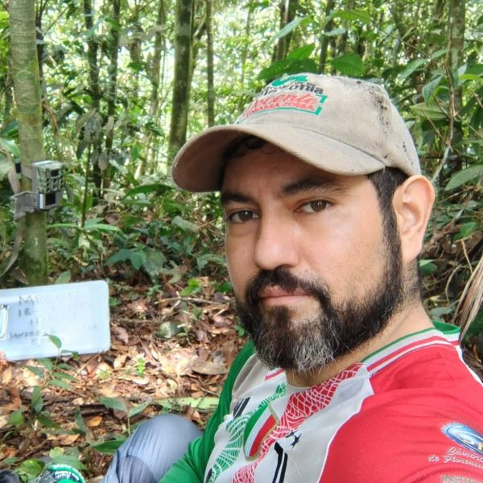
Javier García Villalba
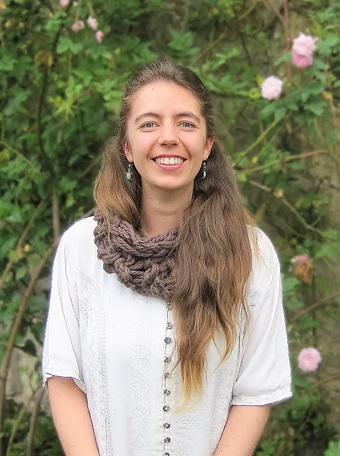
Catalina Concha Osbahr
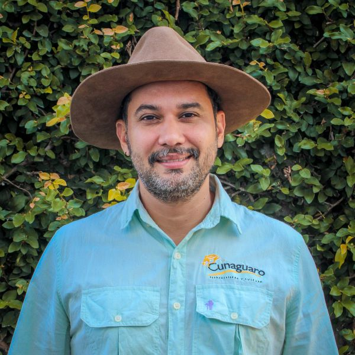
Cesar Rojano Bolaños
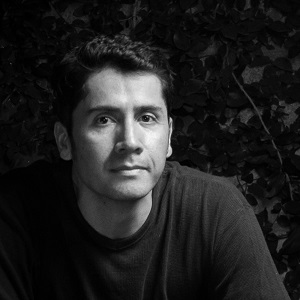
Diego J. Lizcano
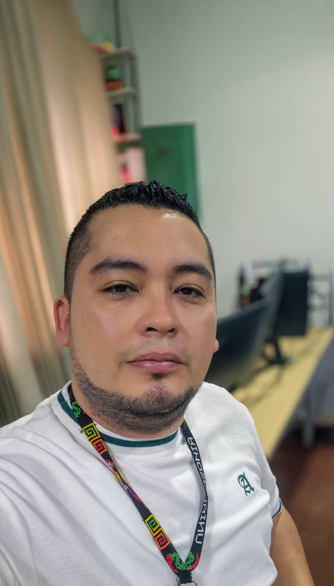
Karol Andres Suarez
Comité Científico
Su función es seleccionar las ponencias presentadas. Las ponencias se revisan y seleccionan en función de su excelencia científica. Los integrantes del Comité Científico realizan una selección final de las ponencias científicamente excelentes para crear un programa equilibrado e interesante.
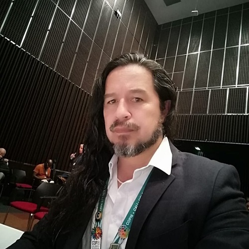
Hugo Mantilla Meluk
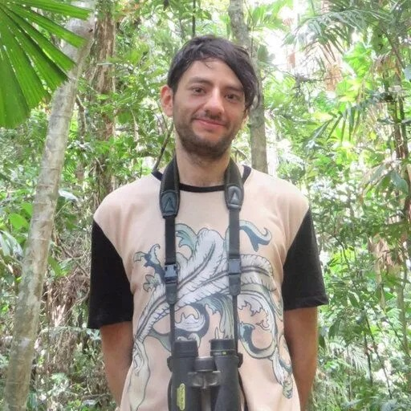
Andres Felipe Suarez Castro
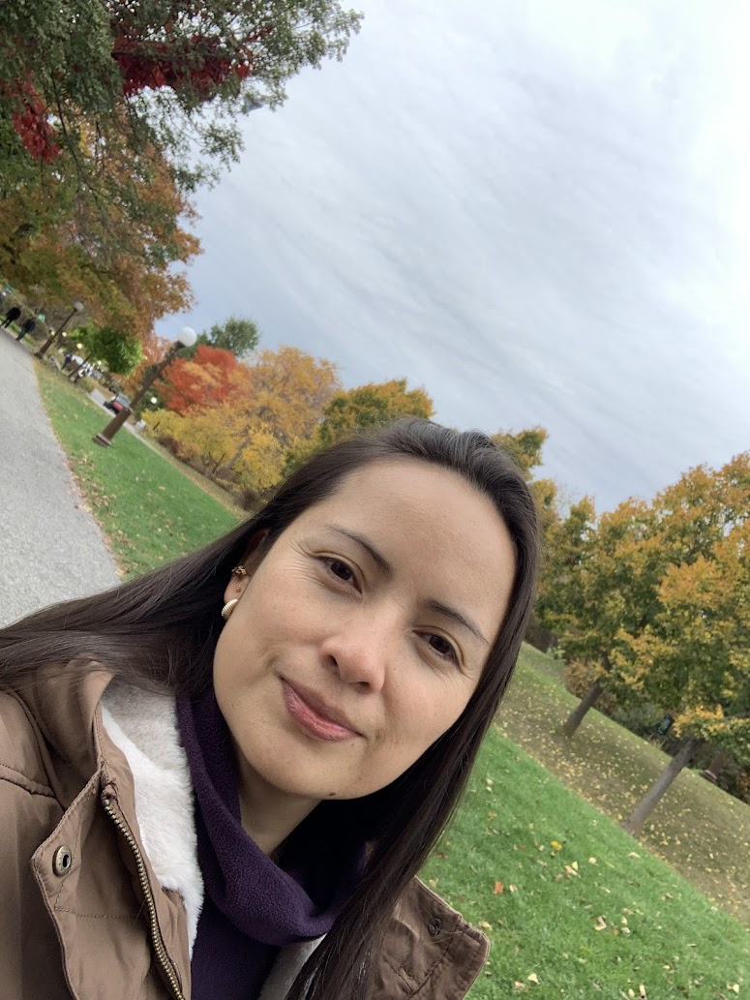
Adriana C. Acero Murcia
Comité Logístico
Se encarga de asegurar que el Congreso funcione de manera fluida y ordenada durante su ejecución presencial. Ofrece soporte a ponentes, asistentes, invitados y público general antes, durante y después del evento.
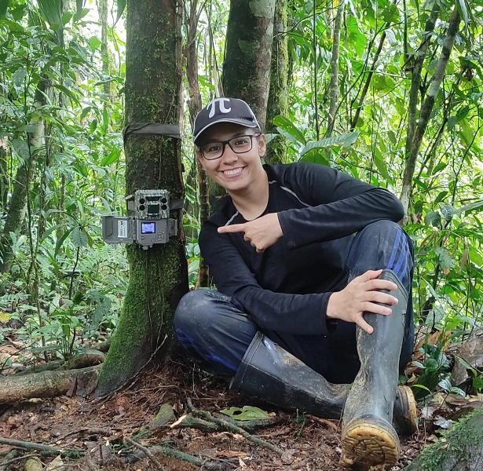
Luisa Fernanda Martínez
Próximamente
Espacio disponible
Comité de Comunicaciones
Lidera la divulgación y posicionamiento del Congreso a nivel local, nacional e internacional. Gestiona la comunicación oficial mediante el envío y publicación oportuna de noticias, convocatorias y contenidos audiovisuales.
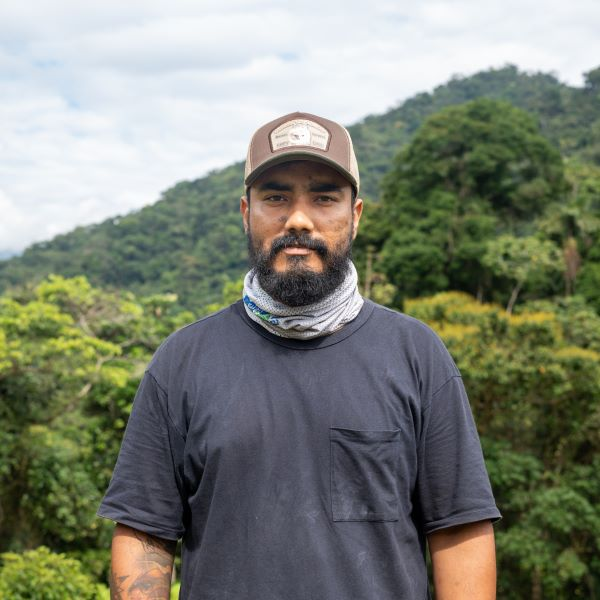
Erick D. Cardona
Próximamente
Espacio disponible
Comité Financiero
Está a cargo de la planeación financiera del Congreso y de contribuir a su sostenibilidad. Apoya la búsqueda y gestión de recursos, patrocinios y apoyos.
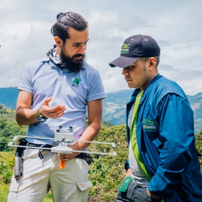
Mauricio Vela
Próximamente
Espacio disponible
Comité de Diversidad e Integración Científica
Promueve un Congreso diverso, incluyente y representativo. Favorece la participación amplia de regiones, instituciones y diferentes trayectorias académicas.
Próximamente
Espacio disponible
Próximamente
Espacio disponible